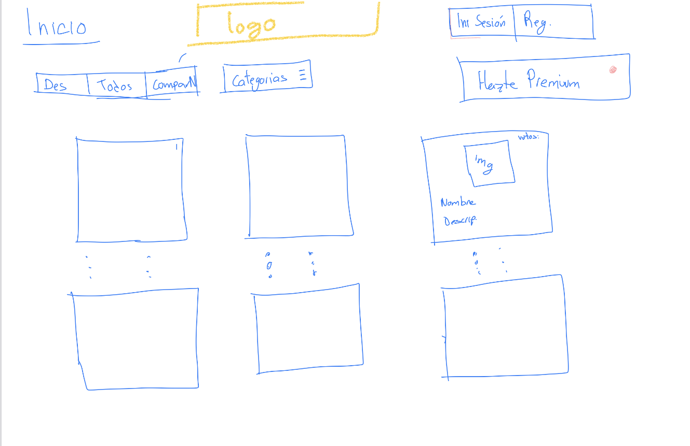
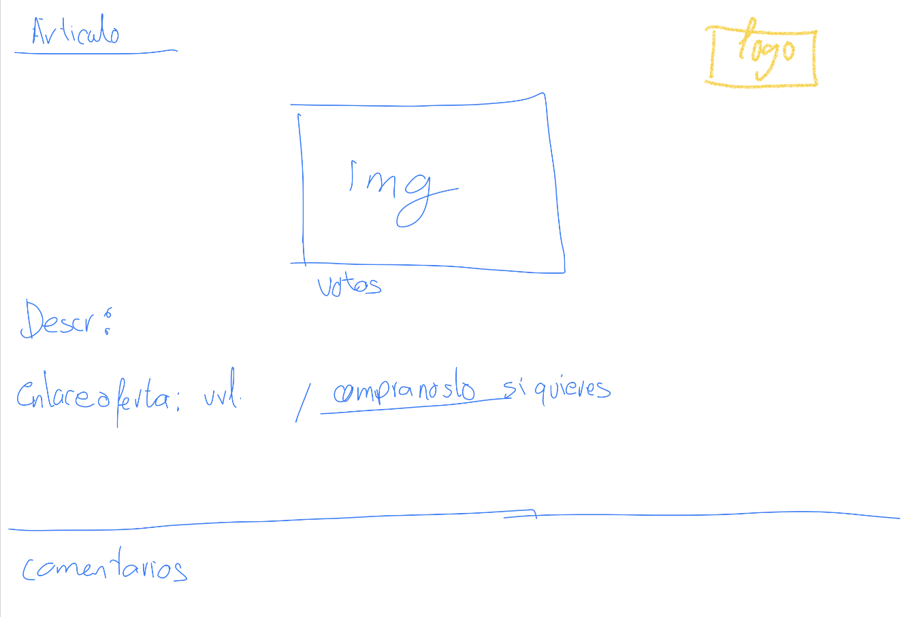
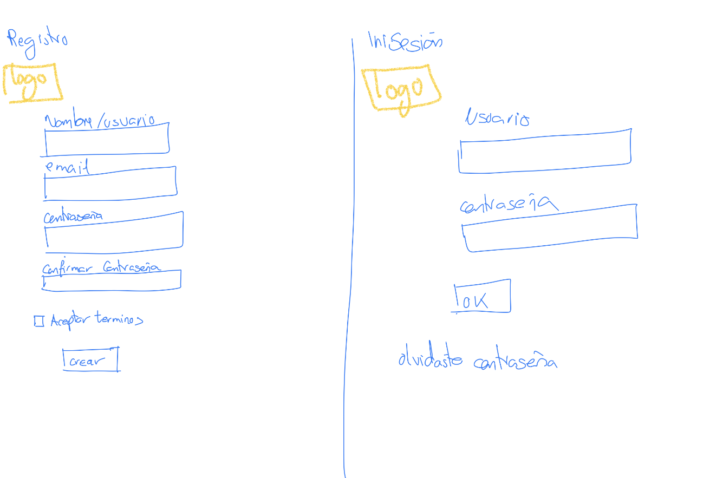
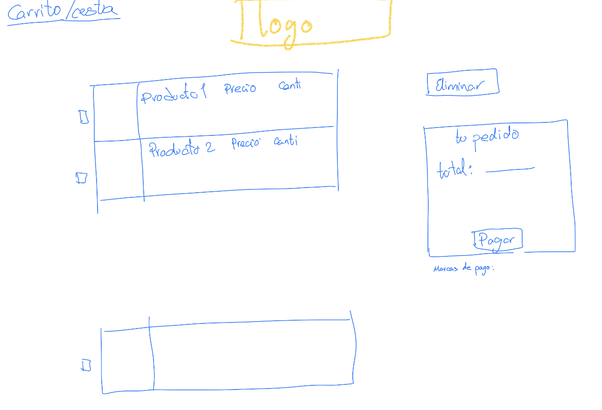

Index Detalles Bocetos Miembros Planificación Contacto
Estos son los bocetos del diseño de la web de offerNow:

Barra de Submenús:
Aquí podemos elegir los productos que queremos ver, teniendo en cuenta la categoría que hemos escogido, ya sea por orden de los productos más destacados(con más votos), todos(se muestran los últimos añadidos primero), o que sólo se muestren los productos de nuestra tienda de segunda mano, aquellos que nos pueden comprar directamente.
Categorias:
Aquí se despliega un menú contextual donde mostramos las distintas categorías de productos a elegir de nuestra aplicación web. Por tanto, cuando elijas una categoría en concreto, sólo se mostrarán los productos que concuerden con la misma.
Inicio sesion/Registro/Hazte premium:
Botones que redirigen a las páginas de inicio de sesión, registro, o de suscripción a usuario premium.
Matriz de Articulos:
Artículos mostrados de acuerdo a la selección escogida por el usuario, en tres columnas. Cada artículo redirecciona a su propia página, donde podremos ver más información sobre el mismo.

Imagen:
Una imagen descriptiva del artículo en cuestión.
Votos:
Número de votos dados por los usuarios de la aplicación al artículo. Esto influye en la importancia del mismo dentro de la sección de destacados. También le da una idea al usuario interesado de la calidad del artículo, o de si es una buena oferta.
Descripcion:
Breve descripción del artículo en cuestión, y de su estado de uso, en el caso de que sea un artículo de segunda mano.
Enlace de oferta(oferta directa/Comprar en nuestra tienda):
Link a la oferta posteada, o en el caso de que sea un artículo de segunda mano, añade el artículo al carrito.

Datos personales del usuario:
Nuestra pantalla de "verificación" en la página web, distinguimos dos partes, una para usuarios que quieran iniciar sesión con su cuenta ya creada anteriormente la cual
tendremos incluida en nuestra base de datos y la otra registrarse con una nueva para ello tendrán que aceptar los términos. También tendremos una opción de recuperación ante cualquier perdida de contraseña en
donde redirigimos al usuario a otra pantalla en donde nos escribe su correo y mandarle un e-mail de verificación.

Se muestra una lista de productos con informacion:
Ante cualquier compra en la página web, en esta pantalla puedes consultar que artículos has añadido en la cesta, la cantidad y el importe total que llevas por el momento, también si quieres eliminar cualquier artículo o finalizar ya
la compra que te redirigimos a una pantalla para completar el pago con tus datos como pueden ser la tarjeta, nombre, etc.
resumen compra: